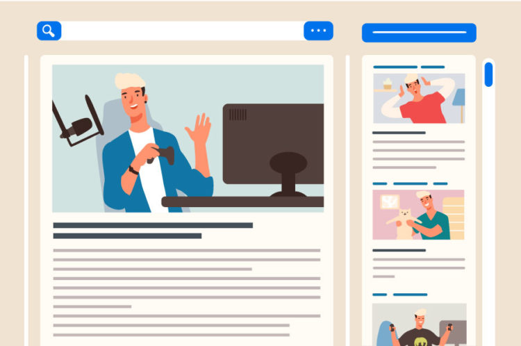

【徹底解説】blogって何？
こんにちは。ぽてっとです。
今回のロードマップを下記にまとめました。
- 1：blogって何？
- 2：blogのメリット
- 3：blogって儲かるの？
- 4：blog初期費用は？
1：blogって何？

そもそもブログとは、昔はパソコンの情報について共有していたのが、パソコン以外の家庭の情報・悩みなどの解決法などを伝えるものに昔から現代にかけて、変化してきました。
昔から今も変わっていないのは、人々の悩みを解決する手段ということです。悩みを解決できるような記事を書くことが、ブログの本質です。
2：blogのメリット
blogのメリットは、文章力が格段に上がることと、臨時収入です。臨時収入については、後ほど解説していきます。
文章力が上がるのは、メリットとして一番大きいと言っても過言ではありません。文章力はビジネスにおける最大の武器です。日頃から文章を書くと言う習慣は自分を高みへと送ってくれるでしょう。
文章力がついてきたら、自分のノウハウを宣伝したり、商品を紹介して収入を得ることができます。
3：blogって儲かるの？

ぶっちゃけ難しいのは事実です。しかし、年単位でやれば稼げます。確実に自分の文章力が上がりそれに比例して、収入が増えます。
blogをやる上で意識してほしいのは、質より量です。量が圧倒的に重要です。量をこなして、こなして文章力を鍛えましょう！
4：blog初期費用は？
blogの初期費用は、1年で1万円ぐらいです。サーバー代・ドメイン代などのお金がかかります。
高いかもしれません、でもこれは自己投資です。将来的に大きなリターンとして帰ってくる可能性は大いにあります。
blogを始めたい方は、サーバーを契約しましょう。ここに記事を置いておきます。サーバー契約
twitterの方でもいい情報を発信していくので、フォローの方よろしくいたします。
この記事は以上です。ここまでみてくださり、ありがとうございました😊